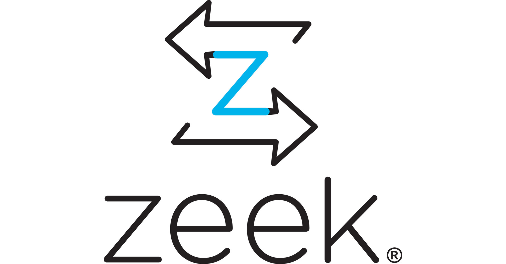

Monitorización con Security Onion
Introducción
Como parte de nuestra estrategia Blue Team ya hemos visto técnica tales como el análisis de logs de forma clásica, con herramientas como Elastic Stack, además de utilidades como los IDS/IPS.
En este caso vamos a ver una herramienta que aglutine a varias de las anteriores. Estamos hablando de Security Onion, una distribución de Linux que nos permitiría fácilmente poder montar un SOC.

Tal y como podemos leer en su documentación:
Quote
Security Onion is a free and open platform for threat hunting, enterprise security monitoring, and log management. It includes our own tools for Alerts, Dashboards, Hunt, PCAP, and Cases as well as other tools such as Playbook, FleetDM, osquery, CyberChef, Elasticsearch, Logstash, Kibana, Suricata, Zeek, and Wazuh.
Como vemos, Security Onion agrupa herramientas bien conocidas de terceros, como otras propias. De las conocidas ya hemos hablado de Suricata o ELK pero echemos un vistazo rápido a otras:
Zeek
Hasta 2018 Zeek fue conocido con el nombre de Bro.

Zeek es un una herramienta de código abierta que realiza un análisis de red pasivo. Utiliza y visualiza grandes cantidades de metadatos de la red para tener una visión de alto nivel. Para cada flujo de tŕafico, los metadatos tipicos constan de una tupla de 5 parámetros: IPs, protocolo, puertos. Pero también se hacen servir atributos específicos del tráfico que permita a los analistas entrar más en detalla como información DNS, detalles del cifrado TLS o información de capa 7.
Suricata/Snort vs Zeek
Suricata/Snort pueden o bien inspeccinar el tráfico de forma pasiva o bloquearlo de forma. Todo ello en función de unas alertas basadas en reglas.
Zeek es un analizador de tráfico que puede extraer información para su posterior disección con el fin de investigar una sucesión de acontecimientos. Genera varios tios de logs (conn, http, ssl...) y provee, como ya hemos dicho, todos los detalles de las conexiones realizadas.
Wazuh
Wazuh es una plataforma gratuita y de código abierto que se usa para prevención de amenazas, detección y respuesta. Es capaz de ofrecer protección en enteorno on-premise, virtualizados, contenerizados o en cloud.
Wazuh consta de un agente de seguridad para un endpoint, desplegado para monitorizar los sitemas y un server de gestión o administración, que recolecta y analiza los datos que recopila de todos los agentes. Además, Wazuh tiene integración completa con Elastic Stack, proporcionando un mecanismo de búsqueda y visualización que permite a los usuarios navegar a través de sus alerta de seguridad.-
Para ver en detalle las capacidades de Wazuh, podéis consultar su GitHub.
CyberChef
Aunque ya lo hemos usado anteriormente, la mejor forma de definir Cyberchef es acudir directamente a sus creadores:
Quote
A simple, intuitive web app for analysing and decoding data without having to deal with complex tools or programming languages. CyberChef encourages both technical and non-technical people to explore data formats, encryption and compression.
Resto de herramientas de Security Onion
La mejor forma de descubrir las herramientas que integra Security Onion es acudir directamente a su documentación
Demostración práctica
Investigación de un caso de exfiltración de datos haciendo uso de Security Onion.
Ejercicio/Práctica
Importar archivos PCAP
Si queremos borrar las alertas generadas y las visualizaciones en ElasticSearch, ejecutaremos estas dos instrucciones:
sudo so-nsm-clear
sudo so-elastic-clear
Y, tras ello, podemos importar el .pcap así:
sudo so-import-pcap /ruta/absoluta/a/archivo.pcap
En principio no debería dar ningún problema pero, si lo diera, reinicidad la máquina. Puesto que Security Onion está basada en contenedores Docker para todas sus herramientas, puede que tras reiniciar tarde un rato en tenerlo todo listo.
Podéis comprobar el estado en el que están los contenedores en tiempo real con:
watch sudo so-status
No os preocupéis si los últimos tres contenedores os salen como DISABLED, eso es porque no está capturando en tiempo real pero los pcap si los analizará con Suricata y Zeek.
Tráfico malware
PRIMER FLUJO TCP
- ¿Cómo podemos ver la secuencia temporal de las alertas, de menos reciente a más reciente?
- Vemos un primer flujo TCP, de una IP interna hacia un host de internet, ¿qué IPs (origen y destino) y qué puertos (origen y destino) se ven implicados?
- Hay una alerta que nos llama la atención puesto que vemos que se realiza una petición a un PDF pero diretamente a una dirección IP, en lugar de a un dominio que sería lo más normal, ¿de qué alerta se trata?
- Previo a esa alerta vemos alguna otra que nos indica que se ha observado un user-agent que se identifica como curl
- ¿Qué nos dice que ha ocurrido la última alerta perteneciente a ese flujo?
- ¿Si cojo cualquier alerta de las pertenecientes a ese flujo TCP, cómo puedo ver en detalle todos los mensajes...? ¿P...?
- ¿En este flujo detallado, qué user-agent podemos ver?
- ¿Se ve algo sospechoso en el cuerpo de la respueta?
- ¿Dónde podemos mandar este tráfico, haciendo uso de un sombrero de cocina, para jugar con él?
- Una vez allí, ¿qué podemos ir quitándole (incluso con una varita mágica) hasta ver algo interesante para nosotros?
- Una vez llegado al meollo del asunto, ¿qué referencias raras podemos ver?
SEGUNDO FLUJO TCP
- Identifica las alerta que pertenecen al siguiente flujo gracias a los números de puerto y las IPs
- Volvemos a mirar todo el flujo de tráfico detallado de la misma manera que en el caso anterior
- ¿Se ve algo raro aquí?
TERCER FLUJO TCP
- Identifica las dos alertas que identifican este flujo, así como sus parámetros.
- Volvemos a mirar todo el flujo de tráfico de la misma manera que en los casos anteriores
- ¿Qué user-agent se está utilizando y qué acción realiza esta petición?
- Vemos que tras este flujo, hay una alerta más de tráfico HTTPS, ¿sabrías decir a qué corresponde este tráfico viendo lo que está ocurriendo?
CUARTO FLUJO TCP
- Ahora aparecen un gran número de alertas avisando de varias cosas, ¿qué tiene pinta de haber ocurrido?
- ¿Cómo puedes mirar detalladamente que ha ocurrido a partir de las alertas?
- ¿Qué vemos en esta vista detallada?
Note
Esto es un breve vistazo a las alertas que hemos generado pero, por normal general, querremos saber cómo lidiar con incidentes así cuando demos con atacantes más sofisticados que sean capaces de evadir nuestras firmas, veamos cómo.
- Pestaña
Hunt - Utilizamos una query predefinida que ordene por evento módulo y evento dataset
- En Group Metrics, ¿qué clase de logs vemos que ha recopilado Zeek?
- En el menú desplegable de las querys, elegir que nos muestre todas las conexiones por ip origen, ip destino, protocolo de red y puerto destino.
- Agrupad ahora en ese mismo desplegable por conexiones HTTP y puerto destino.
- ¿Aparece en Group Metrics algún puerto que no sea el usual de HTTP?
- Si aparece --> Include
- ¿Aparece algo digno de echarle un vistazo en Events? Miradlo de forma detallada como ya sabéis.
- ¿Qué tenemos aquí?
OTRAS FORMAS DE DETECCIÓN
- Agrupar en la query por conexiones HTTP, por método http y por user-agent.
- ¿Qué cosa interesante se ve aquí que podría servirnos para identificar también el tráfico malicioso?
- Agrupa ahora por conexiones HTTP por virtual host.
- ¿Hay algo que te llame la atención por raro y qué pueda ponernos sobre la pista de tráfico malicioso?
- Agrupa ahora por dataset notice (Zeek).
- ¿Qué cosa sospechosa se ve?
- En Events, agrupa por el campo
notice.sub_message - ¿De qué entidad son la mayoría de los certificados?¿Qué conclusión extraes?
Tarea
Documenta esta práctica con todas las explicaciones y capturas de pantalla pertinentes. Además, incluye una conclusión personal de todo este proceso al final del informe de la práctica.